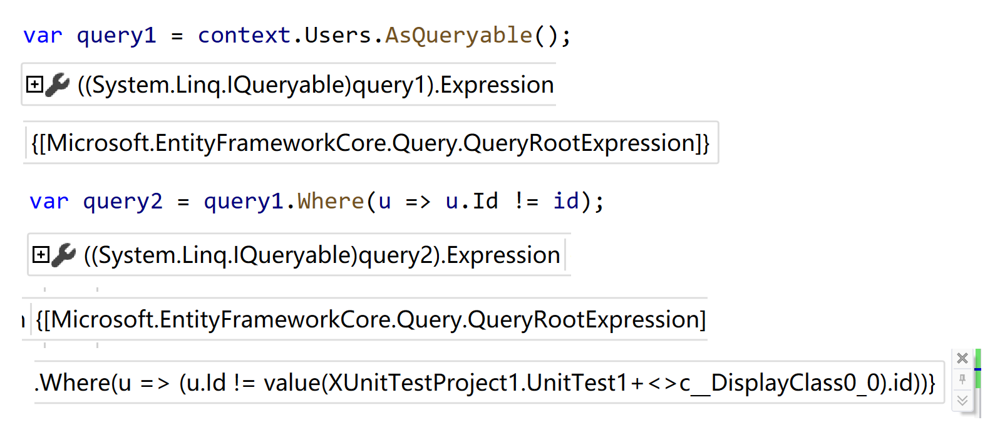
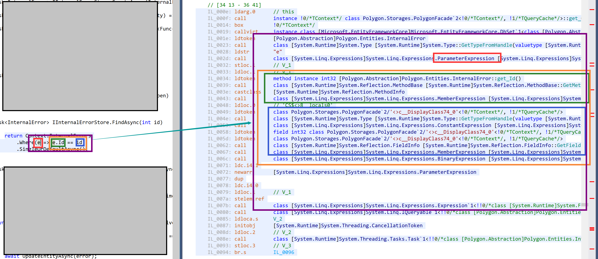

Feb 15, 2021 由 小羊
第 20 轮 TechEmpower 评测结果出炉了，ASP.NET Core 的 Plaintext 成绩名列前茅，带着 EFCore 的测试却在 Single query / Multiple queries / Fortunes 中落了下风，成绩远不如 dapper，更不如直接 ado.net。
人人都说 EFCore 性能差，人人都在写性能低的代码……
EFCore 是如何进行查询的？除了查询语句本身的合理性，EFCore 本身的性能瓶颈又会出现在哪里呢？如何让 EFCore 的查询变得更快呢？
今天，先从 IQueryable 这个接口说起。
IEnumerable<> 的核心作用是提供一些基础数据通过 GetEnumerator 函数来创建一个 IEnumerator<>。
IEnumerator<> 是一个非常单纯的单向迭代器，你可以像系统自带的集合类那样手动实现一个，也可以你可以通过自己编写 yield return / yield break 语句，让编译器将你的程序控制流和变量状态保存在编译器翻译设计的专有 Enumerator 中。
除此之外，System.Linq 这个命名空间提供了大量针对 IEnumerable<> 的拓展。这些拓展将 IEnumerator<> 们通过类似于责任链模式的方法组合起来，提供了很多神奇的 LINQ 功能。
而 IQueryable<> 是什么呢？
IQueryable<> 接口除了实现 IEnumerable<> 以外，还有三个成员
Expression：保存了一个表达式树ElementType：这个 IQueryable<> 的返回类型Provider：一个 IQueryProvider 实例对象而 IQueryProvider 则有这样几个成员函数
IQueryable<> CreateQuery(Expression expression) 根据传入的表达式树构建一个 IQueryable 对象TResult Execute(Expression expression) 执行这个表达式，获得对应结果再参考 System.Linq.Queryable 对 IQueryable<> 的拓展函数的实现
// System.Linq.Queryable
public static int Count<TSource>(this IQueryable<TSource> source)
{
if (source == null)
throw Error.ArgumentNull(nameof(source));
return source.Provider.Execute<int>(
Expression.Call(
null,
CachedReflectionInfo.Count_TSource_1(typeof(TSource)),
source.Expression
));
}
public static IQueryable<TSource> Where<TSource>(this IQueryable<TSource> source, Expression<Func<TSource, bool>> predicate)
{
if (source == null)
throw Error.ArgumentNull(nameof(source));
if (predicate == null)
throw Error.ArgumentNull(nameof(predicate));
return source.Provider.CreateQuery<TSource>(
Expression.Call(
null,
CachedReflectionInfo.Where_TSource_2(typeof(TSource)),
source.Expression, Expression.Quote(predicate)
));
}那么我们有如下结论
IQueryable<> 保存着一个查询表达式树和一个 IQueryProviderIQueryProvider 支撑着 IQueryable<> 的创建和查询执行IQueryable<> 的拓展函数们仅仅是将表达式树拼接成与函数调用相同形态的表达式
而在 EFCore 中，完成这样功能的类则是 EntityQueryable<> 和 EntityQueryProvider。后者在 EFCore 的依赖注入容器中是 Scoped 服务 IAsyncQueryProvider 的实现，完成所有的 IQueryable<> 的创建，并将所有的 Execute 和 ExecuteAsync 的请求转发给 IQueryCompiler 这一服务。
而 IQueryCompiler 中的执行代码大约是这样的
// Microsoft.EntityFrameworkCore.Query.Internal.QueryCompiler
public virtual TResult Execute<TResult>(Expression query)
{
Check.NotNull(query, nameof(query));
var queryContext = _queryContextFactory.Create();
query = ExtractParameters(query, queryContext, _logger);
var compiledQuery
= _compiledQueryCache
.GetOrAddQuery(
_compiledQueryCacheKeyGenerator.GenerateCacheKey(query, async: false),
() => CompileQueryCore<TResult>(_database, query, _model, false));
return compiledQuery(queryContext);
}其中
_compiledQueryCache 是一个由 IMemoryCache 驱动的缓存_compiledQueryCacheKeyGenerator 是将该表达式与数据库模型、数据库驱动等信息的 Hash 值合并产生一个对应的 QueryCacheKey_queryContextFactory 用于生成一个 QueryContext 实例ExtractParameters 将查询表达式中的闭包变量等计算完毕并加入 queryContext 实例compiledQuery 是一个 Func<QueryContext, TResult> 实例，又称为 QueryExecutor而其中 QueryContext 支持和提供
在关系型数据库驱动中，RelationalQueryContext 另外附加
我们每次要执行一个查询，就要先在这个内存缓存中查找是否已经有编译好的执行语句；而这个缓存的键需要利用表达式树来生成。如果我们的查询过于复杂，则会对缓存带来一定的性能负担。
我们稍后讨论 CompileQueryCore 的作用。先来讨论一下表达式树吧。
众所周知，EFCore 的强类型特性是由表达式树这个玩意带来的。
编译器为了减少人为构建表达式树的负担，提供了语法糖，让我们可以像写 Lambda 函数一样书写表达式。然而编译器并没有开洞，而是实打实的进行了表达式树的构建。

可以在图上看到，我们经常执行的根据 ID 查找一个实体的操作会产生如此之多的中间代码。甚至，蓝框内还有闭包变量捕捉的步骤。
如果我们的查询很简单，那似乎也没什么……如果我们要执行一个超级复杂的查询，又要 join 好几个表又要 concat 还要 group 呢？
表达式树毕竟是表达式树，为了创建表达式树，这么多中间代码总是需要执行的。
有没有办法直接跳过这么多表达式树的构建呢？有的。看 EF.CompileQuery。其中的一个典型函数
public static Func<TContext, IEnumerable<TResult>> CompileQuery<TContext, TResult>(
[NotNull] Expression<Func<TContext, IQueryable<TResult>>> queryExpression)
where TContext : DbContext
=> new CompiledQuery<TContext, IEnumerable<TResult>>(queryExpression).Execute;这里实际上是构建了一个 CompileQuery<,> 类型的对象，并且将他的 Execute 函数打包成委托返回。
你可能会问，这不是还需要表达式树吗？
那么请回顾官方文档中这个函数的使用场景：将该函数返回的委托放在 静态字段 或者 单例的成员变量 中。也就是说，对于某个参数设计好了的函数，这个 EF.CompileQuery 函数理应只执行一次。
CompiledQuery 对象在第一次执行时，通过接下来的代码创建一个 Func<QueryContext, TResult> 委托；在这个委托中，本次执行产生的 SQL 语句表达式树、SQL 语句文本会被缓存下来；在第二次执行的时候，就跳过对表达式树的处理，直接执行上面那个委托，甚至在特定情况下快进到直接执行 SQL 语句文本了。
// Microsoft.EntityFrameworkCore.Query.Internal.QueryCompiler
public virtual Func<QueryContext, TResult> CreateCompiledQuery<TResult>(Expression query)
{
Check.NotNull(query, nameof(query));
query = ExtractParameters(query, _queryContextFactory.Create(), _logger, parameterize: false);
return CompileQueryCore<TResult>(_database, query, _model, false);
}是不是感觉会快上很多？我们可以直接获得这个委托，而不是通过字典查找，可以节省很多时间；而且不涉及查询语句缓存，不会存在系统内其他查询太多、某些不常用查询被定期清理掉的情况。
个人认为，在需要比较高性能的同时，又不是直接执行 SQL 语句文本的情况下，这样两种情况可以尝试使用 EF.CompileQuery：
另外，如果查询是只读，不涉及到实体的增删改，此时完全可以考虑到使用 AsNoTracking 这类拓展，将实体更改追踪关掉，在此基础上可以再提高一点性能，大约能与 Dapper 和 ADO.NET 直接读取数据的性能比肩（没有测试数据）。
笔者在阅读网上现存的对 EF.CompileQuery 的介绍中，有读到过一篇说这个函数不接受 ToList 和 ToListAsync 之类的函数，说这个功能支持不完全。
ToList 是 IEnumerable<> 的拓展方法，并不是 IQueryable<> 的拓展方法。也就是说，ToList 实际上是将之前的 IQueryable<> 进行了 foreach 枚举，并手动构建 List<> 对象，所以说不支持似乎情有可原。
而 ToListAsync 是 EFCore 的拓展方法。实际上，他的代码是这样的：
public static async Task<List<TSource>> ToListAsync<TSource>(
[NotNull] this IQueryable<TSource> source,
CancellationToken cancellationToken = default)
{
var list = new List<TSource>();
await foreach (var element in source.AsAsyncEnumerable().WithCancellation(cancellationToken))
{
list.Add(element);
}
return list;
}对，利用了 IAsyncEnumerable 和 await foreach 来达到异步查询的目的。所以，当我们需要使用 ToList、ToArray、ToDictionary 类似功能的时候，使用那个 Func<TContext, IAsyncEnumerable<TResult>> 然后手动构架集合就好了。
这里再简单给几个使用这个函数使用的例子吧。
private static readonly Func<MyContext, int, Task<User>> _findUser =
EF.CompileAsyncQuery(
(MyContext context, int id) => context.Users.Where(u => u.Id == id).FirstOrDefault());
private static readonly Func<MyContext, IAsyncEnumerable<UserDto>> _listUsers =
EF.CompileAsyncQuery(
(MyContext context) => context.Users.Select(u => new UserDto(u.Id, u.Name, true)));
private static readonly Func<MyContext, DateTimeOffset, CancellationToken, Task<int>> _countUsers =
EF.CompileAsyncQuery(
(MyContext context, DateTimeOffset time, CancellationToken _) => context.Users.Where(u => u.RegisterTime < time).Count());
public async Task DoAsync(CancellationToken cancellationToken = default)
{
using var context = CreateContext();
var user = await _findUser(context, 233);
var list = new List<UserDto>();
await foreach (var item in _listUsers(context).WithCancellation(cancellationToken))
{
list.Add(item);
}
var count = await _countUsers(context, DateTimeOffset.Now.AddDays(-1), cancellationToken);
}可以创建带有 CancellationToken 的异步版本。同步版本就不用 CancellationToken 了。
我们需要结合 SqlServer 这个关系型数据库解释所谓的 QueryExecutor。其他关系型数据库的大致构建过程其实差不多，非关系型的 InMemory 和 Cosmos 的驱动用的少就不解释了哈。
以 context.Set<User>().Where(u => u.Id != id).ToList() 这一查询的翻译为例。
我们可以发现，这个查询的 QueryExecutor 是 Func<QueryContext, IEnumerable<User>>，传入 queryContext 会返回一个 IEnumerable 对象。
在 EFCore 3.1 中，返回的是 QueryingEnumerable；在 EFCore 5.0 中，返回 SingleQueryingEnumerable 或者 SplitQueryingEnumerable 或者 FromSqlQueryingEnumerable。5.0 的改动是因为带来了 AsSplitQuery 这个拓展，避免笛卡尔爆炸的问题。
先跳过 QueryExecutor 函数体，看看返回值。
以 SingleQueryingEnumerable 为例，我们看到它实现了 IEnumerable 和 IAsyncEnumerable。以下是 GetEnumerator 结果的 MoveNext 和 InitializeReader 的实现。
private bool InitializeReader(DbContext _, bool result)
{
EntityFrameworkEventSource.Log.QueryExecuting();
var relationalCommand = _relationalCommandCache.GetRelationalCommand(_relationalQueryContext.ParameterValues);
_dataReader = relationalCommand.ExecuteReader(
new RelationalCommandParameterObject(
_relationalQueryContext.Connection,
_relationalQueryContext.ParameterValues,
_relationalCommandCache.ReaderColumns,
_relationalQueryContext.Context,
_relationalQueryContext.CommandLogger,
_detailedErrorsEnabled));
_resultCoordinator = new SingleQueryResultCoordinator();
_relationalQueryContext.InitializeStateManager(_standAloneStateManager);
return result;
}
public bool MoveNext()
{
try
{
using (_relationalQueryContext.ConcurrencyDetector.EnterCriticalSection())
{
if (_dataReader == null)
{
_relationalQueryContext.ExecutionStrategyFactory.Create()
.Execute(true, InitializeReader, null);
}
var hasNext = _resultCoordinator.HasNext ?? _dataReader.Read();
Current = default;
if (hasNext)
{
while (true)
{
_resultCoordinator.ResultReady = true;
_resultCoordinator.HasNext = null;
Current = _shaper(
_relationalQueryContext, _dataReader.DbDataReader, _resultCoordinator.ResultContext,
_resultCoordinator);
if (_resultCoordinator.ResultReady)
{
// We generated a result so null out previously stored values
_resultCoordinator.ResultContext.Values = null;
break;
}
if (!_dataReader.Read())
{
_resultCoordinator.HasNext = false;
// Enumeration has ended, materialize last element
_resultCoordinator.ResultReady = true;
Current = _shaper(
_relationalQueryContext, _dataReader.DbDataReader, _resultCoordinator.ResultContext,
_resultCoordinator);
break;
}
}
}
return hasNext;
}
}
catch (Exception exception)
{
_queryLogger.QueryIterationFailed(_contextType, exception);
throw;
}
}其中
ExecutionStrategy 处理查询重试之类的执行逻辑_relationalCommandCache 保存了翻译的 SQL 表达式和语句文本_dataReader 保存着 ADO.NET 中常用的 DbCommand，DbDataReader，DbConnection 等工具，是的，底层读取库就是 ADO.NET_resultCoordinator 将 ADO.NET 读取的一行结果存入 ResultContext，然后当一条记录完整读取以后（如果有集合 Include，则是集合整个读取完成），由 _shaper 转换成最终实体这个 QueryingEnumerable 是如何构建出来的？终于到了喜闻乐见的 CompileQueryCore 函数讲解了。
// Microsoft.EntityFrameworkCore.Query.Internal.QueryCompiler
public virtual Func<QueryContext, TResult> CompileQueryCore<TResult>(
[NotNull] IDatabase database,
[NotNull] Expression query,
[NotNull] IModel model,
bool async)
=> database.CompileQuery<TResult>(query, async);
// Microsoft.EntityFrameworkCore.Storage.Database
public virtual Func<QueryContext, TResult> CompileQuery<TResult>(Expression query, bool async)
=> Dependencies.QueryCompilationContextFactory
.Create(async)
.CreateQueryExecutor<TResult>(query);
// Microsoft.EntityFrameworkCore.Query.QueryCompilationContext
public virtual Func<QueryContext, TResult> CreateQueryExecutor<TResult>(Expression query)
{
query = _queryTranslationPreprocessorFactory.Create(this).Process(query);
// Convert EntityQueryable to ShapedQueryExpression
query = _queryableMethodTranslatingExpressionVisitorFactory.Create(this).Visit(query);
query = _queryTranslationPostprocessorFactory.Create(this).Process(query);
// Inject actual entity materializer
// Inject tracking
query = _shapedQueryCompilingExpressionVisitorFactory.Create(this).Visit(query);
// If any additional parameters were added during the compilation phase (e.g. entity equality ID expression),
// wrap the query with code adding those parameters to the query context
query = InsertRuntimeParameters(query);
var queryExecutorExpression = Expression.Lambda<Func<QueryContext, TResult>>(
query,
QueryContextParameter);
try
{
return queryExecutorExpression.Compile();
}
finally
{
Logger.QueryExecutionPlanned(new ExpressionPrinter(), queryExecutorExpression);
}
}嗯，这玩意……老套娃人了。
这里的代码其实挺抽象的。另外不要被那个 .Compile() 吓到，那个只是利用表达式树把动态构建的函数体生成为真正的委托对象而已，我们需要在它 Compile 之前看到这个函数体内部究竟是什么。
至于查询翻译过程本身的设计，这次先不介绍。
依然是上面那个例子，调试 EFCore 源代码设断点，可以看到，此时 queryExecutor 是这样的：
return new SingleQueryingEnumerable<User>(
relationalQueryContext: (RelationalQueryContext)queryContext,
relationalCommandCache: value(RelationalCommandCache),
shaper: value(Func<QueryContext, DbDataReader, ResultContext, SingleQueryResultCoordinator, User>),
contextType: typeof(MyContext),
standAloneStateManager: False,
detailedErrorsEnabled: False);在刚才的过程中， InsertRuntimeParameters 并没有实际发挥作用，因为闭包捕捉的 id 变量早在 QueryCompiler.ExtractParameters 时就变为了 ParameterExpression 并被加入 QueryContext，而并没有在查询翻译过程中使用任何“运行时参数”。
在不使用导航属性的情况下，试了几个常见的例子，基本上都不会触发“运行时参数”。笔者找到了这样的两个例子：
public class User
{
public int Id { get; set; }
}
public class Tenant
{
public int Id { get; set; }
public ICollection<User> Users { get; set; }
}
modelBuilder.Entity<Tenant>(entity => entity.HasMany(e => e.Users).WithOne());
var uu = new User { /* .. */ };
context.Users.Where(u => u.Equals(uu)).ToList();
context.Tenants.Where(t => t.Users.Contains(uu)).ToList();此时 queryExecutor 是这样的：
queryContext.AddParameter(
"__entity_equality_uu_0_Id",
new Func<QueryContext, int?>(
queryContext => ParameterValueExtractor(queryContext, "__uu_0", IProperty)
).Invoke(queryContext));
return new SingleQueryingEnumerable<User>(
relationalQueryContext: (RelationalQueryContext)queryContext,
relationalCommandCache: value(RelationalCommandCache),
shaper: value(Func<QueryContext, DbDataReader, ResultContext, SingleQueryResultCoordinator, User>),
contextType: typeof(MyContext),
standAloneStateManager: False,
detailedErrorsEnabled: False);也就是说，所谓“运行时参数”是 SQL 语句执行时的参数，但是，要想读取它的值，就需要反过来从 QueryContext 中读取。为什么会在 QueryContext 中呢？因为之前 QueryCompiler.ExtractParameters 的时候，这个对象的整体被加入了 QueryContext 中，而不是被直接计算好。对于需要判断实体包含和实体相等的情况，就需要用到这种奇怪的方法。
现在问题来了：relationalCommandCache 和 shaper 是在何时构建好的？
前者保存着翻译完成的 SQL 表达式树的对象，他会在创建 DbCommand 对象的时候，调用 QuerySqlGenerator 将表达式树拍平成为 SQL 语句文本。
这里我们来研究一下后者这个 shaper 委托。
这个委托也是由 EFCore 动态创建的，但是这个委托的具体实现是和数据库类型有关系的。在关系型数据库中，由 RelationalShapedQueryCompilingExpressionVisitor 进行创建。
对于刚才直接拿到实体的情况，它产生的代码是这样的
// SELECT [u].[Id], [u].[Name], [u].[RegisterTime], [u].[TenantId]
// FROM [Users] AS [u]
User Shape(QueryContext queryContext, DbDataReader dataReader, ResultContext resultContext, SingleQueryResultCoordinator resultCoordinator)
{
User var1 =
{
IEntityType entityType1;
var materializationContext1 = new MaterializationContext(
valueBuffer: ValueBuffer.Empty,
context: queryContext.Context);
User instance1 = null;
InternalEntityEntry entry1 = queryContext.TryGetEntry(
key: value(IKey: "Key: User.Id PK"),
keyValues: new object[] { dataReader.GetInt32(0) },
throwOnNullKey: True,
out bool hasNullKey1));
if (!hasNullKey1)
{
if (entry1 != default(InternalEntityEntry))
{
entityType1 = entry1.EntityType;
instance1 = (User)entry1.Entity;
}
else
{
ValueBuffer shadowValueBuffer1 = ValueBuffer.Empty;
entityType1 = value("EntityType: User");
instance1 = entityType1 switch
{
value("EntityType: User") =>
{
// EFCore生成的shadow property，此处为 int? TenantId
shadowValueBuffer1 = new ValueBuffer(new[]
{
dataReader.IsDBNull(3) ? default(object) : dataReader.GetInt32(3)
});
User instance = new User();
instance.<Id>k__BackingField = dataReader.GetInt32(0);
instance.<Name>k__BackingField = dataReader.IsDBNull(1)
? default(string)
: dataReader.GetString(1);
instance.<RegisterTime>k__BackingField = dataReader.GetFieldValue(2);
block-return instance;
},
_ => null,
};
entry1 = entityType1 == default(IEntityType)
? default(InternalEntityEntry)
: queryContext.StartTracking(entityType1, instance1, shadowValueBuffer1);
}
}
block-return instance1;
};
return var1;
}注意此处摆出的代码是从 EFCore 生成的表达式树改写而来，与原来的表达式树并不完全相同，原来的一些写法在 C# 中无法直接表达（例如 kotlin 那样，一对花括号最后一个值作为整个花括号的值，此处用 block-return 表示；以及 default(void) 作为三元表达式值的使用），所以稍有改写。
扔代码出来不是让大家看懂，而是让大家体会一下。Don’t try to understand it, feel it.
可以看到大致的实体生成过程，以及实体跟踪的流程：先看上下文是否已经追踪了这样的实体，有则直接使用，无则跳过。
而 switch 则是给实体继承关系做出的设计。在有实体继承的情况下，entityType1 的值是通过读取查询结果某个 Shadow Property 字段来确定的。
如果使用 AsNoTracking 标记查询呢？
// SELECT [u].[Id], [u].[Name], [u].[RegisterTime], [u].[TenantId]
// FROM [Users] AS [u]
User Shape(QueryContext queryContext, DbDataReader dataReader, ResultContext resultContext, SingleQueryResultCoordinator resultCoordinator)
{
User var1 =
{
IEntityType entityType1;
var materializationContext1 = new MaterializationContext(
valueBuffer: ValueBuffer.Empty,
context: queryContext.Context);
User instance1 = null;
if (((object)dataReader.GetInt32(0)) != null)
{
ValueBuffer shadowValueBuffer1 = ValueBuffer.Empty;
entityType1 = value("EntityType: User");
instance1 = entityType1 switch
{
value("EntityType: User") =>
{
User instance = new User();
instance.<Id>k__BackingField = dataReader.GetInt32(0);
instance.<Name>k__BackingField = dataReader.IsDBNull(1)
? default(string)
: dataReader.GetString(1);
instance.<RegisterTime>k__BackingField = dataReader.GetFieldValue(2);
block-return instance;
},
_ => null,
};
}
block-return instance1;
};
return var1;
}可以看到，实体跟踪相关的代码没了，Shadow Property 相关的也没了，毕竟上下文不追踪这个实体，怎么会知道有哪些虚拟属性呢。上下文能有什么坏心思呢。
如果是查询中 Select 创建了一个非实体类型呢？（这里其实和 .Count()、.Sum() 之类的函数效果差不多）
例如 context.Users.Select(u => new UserDto(u.Id, u.Name, false)).ToList();。
// SELECT [u].[Id], [u].[Name]
// FROM [Users] AS [u]
UserDto Shape(QueryContext queryContext, DbDataReader dataReader, ResultContext resultContext, SingleQueryResultCoordinator resultCoordinator)
{
var param0 = (int?)dataReader.GetInt32(0);
var param1 = dataReader.IsDBNull(1) ? default(string) : dataReader.GetString(1);
return new UserDto((int)param0, param1, false);
}嗯，甚至直接跳过了 IEntityType 的检查……不过也正常，毕竟这里没有一个实体对应多种 CLR 类型的状况。
再来一个使用了单个实体 Include 的吧。以 context.Users.Include(u => u.Tenant).ToListAsync() 为例
// SELECT [u].[Id], [u].[Name], [u].[RegisterTime], [u].[TenantId], [t].[Id]
// FROM [Users] AS [u]
// LEFT JOIN [Tenants] AS [t] ON [u].[TenantId] = [t].[Id]
User Shape(QueryContext queryContext, DbDataReader dataReader, ResultContext resultContext, SingleQueryResultCoordinator resultCoordinator)
{
User var1 =
{
IEntityType entityType1;
var materializationContext1 = new MaterializationContext(
valueBuffer: ValueBuffer.Empty,
context: queryContext.Context);
User instance1 = null;
InternalEntityEntry entry1 = queryContext.TryGetEntry(
key: value(IKey: "Key: User.Id PK"),
keyValues: new object[] { dataReader.GetInt32(0) },
throwOnNullKey: True,
out bool hasNullKey1));
if (!hasNullKey1) { ... } // 此处与上述带 Tracking 的类似
block-return instance1;
};
Tenant var2 =
{
IEntityType entityType2;
var materializationContext2 = new MaterializationContext(
valueBuffer: ValueBuffer.Empty,
context: queryContext.Context);
Tenant instance2 = null;
InternalEntityEntry entry2 = queryContext.TryGetEntry(
key: value(IKey: "Key: Tenant.Id PK"),
keyValues: new object[] { dataReader.IsDBNull(4) ? default(object) : dataReader.GetInt32(4) },
throwOnNullKey: False,
out bool hasNullKey2));
if (!hasNullKey2) { ... } // 此处与上述带 Tracking 的类似
block-return instance2;
};
IncludeReference(
queryContext: queryContext,
entity: var1,
relatedEntity: var2,
navigation: value("Navigation: User.Tenant (Tenant) ToPrincipal Tenant Inverse: Users"),
inverseNavigation: value("Navigation: Tenant.Users (ICollection<User>) Collection ToDependent User Inverse: Tenant"),
fixup: (entity, relatedEntity) =>
{
entity.<Tenant>k__BackingField = relatedEntity;
// value(ClrICollectionAccessor<Tenant, ICollection<User>, User>) = inverseNavigation.GetCollectionAccessor()
value(IClrICollectionAccessor).Add(relatedEntity, entity, forMaterialization: True);
},
trackingQuery: True);
return var1;
}
// Microsoft.EntityFrameworkCore.Query.RelationalShapedQueryCompilingExpressionVisitor+ShaperProcessingExpressionVisitor
private static void IncludeReference<TEntity, TIncludingEntity, TIncludedEntity>(
QueryContext queryContext,
TEntity entity,
TIncludedEntity relatedEntity,
INavigationBase navigation,
INavigationBase inverseNavigation,
Action<TIncludingEntity, TIncludedEntity> fixup,
bool trackingQuery)
where TEntity : class
where TIncludingEntity : class, TEntity
where TIncludedEntity : class
{
if (entity is TIncludingEntity includingEntity)
{
if (trackingQuery
&& navigation.DeclaringEntityType.FindPrimaryKey() != null)
{
// For non-null relatedEntity StateManager will set the flag
if (relatedEntity == null)
{
queryContext.SetNavigationIsLoaded(includingEntity, navigation);
}
}
else
{
navigation.SetIsLoadedWhenNoTracking(includingEntity);
if (relatedEntity != null)
{
fixup(includingEntity, relatedEntity);
if (inverseNavigation != null
&& !inverseNavigation.IsCollection)
{
inverseNavigation.SetIsLoadedWhenNoTracking(relatedEntity);
}
}
}
}
}再来一个集合 Include 的吧。集合的特别复杂。
以 context.Tenants.Include(t => t.Users).ToListAsync() 为例
// SELECT [t].[Id], [u].[Id], [u].[Name], [u].[RegisterTime], [u].[TenantId]
// FROM [Tenants] AS [t]
// LEFT JOIN [Users] AS [u] ON [t].[Id] = [u].[TenantId]
// ORDER BY [t].[Id], [u].[Id]
Tenant Shape(QueryContext queryContext, DbDataReader dataReader, ResultContext resultContext, SingleQueryResultCoordinator resultCoordinator)
{
if (resultContext.Values == null)
{
Tenant var1 =
{
var materializationContext1 = new MaterializationContext(
valueBuffer: ValueBuffer.Empty,
context: queryContext.Context);
Tenant instance1 = null;
InternalEntityEntry entry1 = queryContext.TryGetEntry(
key: value(IKey: "Key: Tenant.Id PK"),
keyValues: new object[] { dataReader.GetInt32(0) },
throwOnNullKey: True,
out bool hasNullKey1));
if (!hasNullKey1) { ... } // 此处与上述带 Tracking 的类似
block-return instance1;
};
resultContext.Values = new[] { var1 };
InitializeIncludeCollection(
collectionId: 0,
queryContext: queryContext,
dbDataReader: dataReader,
resultCoordinator: resultCoordinator,
entity: (Tenant)resultContext.Values[0],
parentIdentifier: (queryContext, dataReader) => new object[] { (int?)dataReader.GetInt32(0) },
outerIdentifier: (queryContext, dataReader) => new object[] { (int?)dataReader.GetInt32(0) },
navigation: value("Navigation: Tenant.Users (ICollection<User>) Collection ToDependent User Inverse: Tenant"),
clrCollectionAccessor: value(ClrCollectionAccessor),
trackingQuery: True);
}
PopulateIncludeCollection(
collectionId: 0,
queryContext: queryContext,
dbDataReader: dataReader,
resultCoordinator: resultCoordinator,
parentIdentifier: (queryContext, dataReader) => new object[] { (int?)dataReader.GetInt32(0) },
outerIdentifier: (queryContext, dataReader) => new object[] { (int?)dataReader.GetInt32(0) },
selfIdentifier: (queryContext, dataReader) => new object[] { dataReader.IsDBNull(1) ? default(int?) : (int?)dataReader.GetInt32(1) },
parentIdentifierValueComparers: value(IReadOnlyList<ValueComparer>),
outerIdentifierValueComparers: value(IReadOnlyList<ValueComparer>),
selfIdentifierValueComparers: value(IReadOnlyList<ValueComparer>),
innerShaper: (queryContext, dataReader, resultContext, resultCoordinator) =>
{
User var1 =
{
var materializationContext2 = new MaterializationContext(
valueBuffer: ValueBuffer.Empty,
context: queryContext.Context);
User instance2 = null;
InternalEntityEntry entry2 = queryContext.TryGetEntry(
key: value(IKey: "Key: User.Id PK"),
keyValues: new[] { dataReader.IsDBNull(1) ? default(object) : dataReader.GetInt32(1) },
throwOnNullKey: False,
out bool hasNullKey2));
if (!hasNullKey2) { ... } // 此处与上述带 Tracking 的类似
block-return instance2;
};
return var1;
},
inverseNavigation: value("Navigation: User.Tenant (Tenant) ToPrincipal Tenant Inverse: Users"),
fixup: (Tenant including, User included) =>
{
value(IClrICollectionAccessor).Add(including, included, True);
included.<Tenant>k__BackingField = including;
},
trackingQuery: True);
return resultCoordinator.ResultReady
? (Tenant)resultContext.Values[0]
: default(Tenant);
}
// Microsoft.EntityFrameworkCore.Query.RelationalShapedQueryCompilingExpressionVisitor+ShaperProcessingExpressionVisitor
private static void InitializeIncludeCollection<TParent, TNavigationEntity>(
int collectionId,
QueryContext queryContext,
DbDataReader dbDataReader,
SingleQueryResultCoordinator resultCoordinator,
TParent entity,
Func<QueryContext, DbDataReader, object[]> parentIdentifier,
Func<QueryContext, DbDataReader, object[]> outerIdentifier,
INavigationBase navigation,
IClrCollectionAccessor clrCollectionAccessor,
bool trackingQuery)
where TParent : class
where TNavigationEntity : class, TParent
{
object collection = null;
if (entity is TNavigationEntity)
{
if (trackingQuery)
{
queryContext.SetNavigationIsLoaded(entity, navigation);
}
else
{
navigation.SetIsLoadedWhenNoTracking(entity);
}
collection = clrCollectionAccessor.GetOrCreate(entity, forMaterialization: true);
}
var parentKey = parentIdentifier(queryContext, dbDataReader);
var outerKey = outerIdentifier(queryContext, dbDataReader);
var collectionMaterializationContext = new SingleQueryCollectionContext(entity, collection, parentKey, outerKey);
resultCoordinator.SetSingleQueryCollectionContext(collectionId, collectionMaterializationContext);
}
// Microsoft.EntityFrameworkCore.Query.RelationalShapedQueryCompilingExpressionVisitor+ShaperProcessingExpressionVisitor
private static void PopulateIncludeCollection<TIncludingEntity, TIncludedEntity>(
int collectionId,
QueryContext queryContext,
DbDataReader dbDataReader,
SingleQueryResultCoordinator resultCoordinator,
Func<QueryContext, DbDataReader, object[]> parentIdentifier,
Func<QueryContext, DbDataReader, object[]> outerIdentifier,
Func<QueryContext, DbDataReader, object[]> selfIdentifier,
IReadOnlyList<ValueComparer> parentIdentifierValueComparers,
IReadOnlyList<ValueComparer> outerIdentifierValueComparers,
IReadOnlyList<ValueComparer> selfIdentifierValueComparers,
Func<QueryContext, DbDataReader, ResultContext, SingleQueryResultCoordinator, TIncludedEntity> innerShaper,
INavigationBase inverseNavigation,
Action<TIncludingEntity, TIncludedEntity> fixup,
bool trackingQuery)
where TIncludingEntity : class
where TIncludedEntity : class
{
var collectionMaterializationContext = resultCoordinator.Collections[collectionId];
if (collectionMaterializationContext.Parent is TIncludingEntity entity)
{
if (resultCoordinator.HasNext == false)
{
// Outer Enumerator has ended
GenerateCurrentElementIfPending();
return;
}
if (!CompareIdentifiers(
outerIdentifierValueComparers,
outerIdentifier(queryContext, dbDataReader), collectionMaterializationContext.OuterIdentifier))
{
// Outer changed so collection has ended. Materialize last element.
GenerateCurrentElementIfPending();
// If parent also changed then this row is now pointing to element of next collection
if (!CompareIdentifiers(
parentIdentifierValueComparers,
parentIdentifier(queryContext, dbDataReader), collectionMaterializationContext.ParentIdentifier))
{
resultCoordinator.HasNext = true;
}
return;
}
var innerKey = selfIdentifier(queryContext, dbDataReader);
if (innerKey.All(e => e == null))
{
// No correlated element
return;
}
if (collectionMaterializationContext.SelfIdentifier != null)
{
if (CompareIdentifiers(selfIdentifierValueComparers, innerKey, collectionMaterializationContext.SelfIdentifier))
{
// repeated row for current element
// If it is pending materialization then it may have nested elements
if (collectionMaterializationContext.ResultContext.Values != null)
{
ProcessCurrentElementRow();
}
resultCoordinator.ResultReady = false;
return;
}
// Row for new element which is not first element
// So materialize the element
GenerateCurrentElementIfPending();
resultCoordinator.HasNext = null;
collectionMaterializationContext.UpdateSelfIdentifier(innerKey);
}
else
{
// First row for current element
collectionMaterializationContext.UpdateSelfIdentifier(innerKey);
}
ProcessCurrentElementRow();
resultCoordinator.ResultReady = false;
}
void ProcessCurrentElementRow()
{
var previousResultReady = resultCoordinator.ResultReady;
resultCoordinator.ResultReady = true;
var relatedEntity = innerShaper(
queryContext, dbDataReader, collectionMaterializationContext.ResultContext, resultCoordinator);
if (resultCoordinator.ResultReady)
{
// related entity is materialized
collectionMaterializationContext.ResultContext.Values = null;
if (!trackingQuery)
{
fixup(entity, relatedEntity);
if (inverseNavigation != null)
{
inverseNavigation.SetIsLoadedWhenNoTracking(relatedEntity);
}
}
}
resultCoordinator.ResultReady &= previousResultReady;
}
void GenerateCurrentElementIfPending()
{
if (collectionMaterializationContext.ResultContext.Values != null)
{
resultCoordinator.HasNext = false;
ProcessCurrentElementRow();
}
collectionMaterializationContext.UpdateSelfIdentifier(null);
}
}嗯，这件事情很神奇。
理论上，在不带过滤的情况下，One Include Many 和 Many Include One 应该是一致的？
为何代码为什么差别这么大？实际上，这就是“查询跟踪”的神秘之处了。
不知道各位朋友是否在网上看见过这样的文章，说使用 AsNoTracking 可以提高查询性能，并且还建议大家直接 optionsBuilder.UseQueryTrackingBehavior(NoTracking)？
实际上，这样有一种隐藏的坑：
如果你使用了一对多的 SQL JOIN，并且还保持着原来的实体形状，如以下代码所示：
var results = context.Tenants
.AsNoTracking()
.Join(
inner: context.Users.AsNoTracking(),
outerKeySelector: t => t.Id,
innerKeySelector: u => u.TenantId,
resultSelector: (t, u) => new { t, u })
.ToList();假设你的 results[0].t.Id == results[1].t.Id，也就是前两条在数据库中是同一个 t 实例，当你拉取到本地时，你会发现 object.ReferenceEquals(results[0].t, results[1].t) == false，或者说在本地不是同一个实例，而两者仅仅是值相等。
如果上述代码使用的都是 AsTracking，那么 object.ReferenceEquals(results[0].t, results[1].t) == true，从头到尾只会创建一个这样的实体。
为了保证 One Include Many 在未开启实体追踪的时候也正常工作，不得不使用一些奇怪的代码来保证结果正确性。
这种情况是在笔者两年前做 JOIN 以后拉到本地 GroupBy 的时候发现的。当年在已经写了很多代码以后才开启了 NoTracking，结果导致很多原有功能失效。从那之后，笔者都是老老实实开 Tracking 的。
对，确实有很多“不开启实体跟踪”还要“生成出来的实体不重复”的情况，这种情况下要怎么做呢？
EFCore 5.0 新推出了 NoTrackingWithIdentityResolution。用这个就能保证上述的引用相等，但是实体不会最终被上下文追踪。
另外，所谓“不开启实体跟踪”最大的影响场景，是查询大量数据以后，对上下文进行多次保存操作。如果你觉得频繁保存时处理大量实体变得异常缓慢，你应该考虑修改 DbContext.ChangeTracker.AutoDetectChangesEnabled 为 false，然后对所有修改过的实体手动调用 context.Update。这样即使上下文追踪上万个实体，保存都是几乎一瞬间的事情。
另外，实体追踪还有什么用呢？
记得 IQueryable<> 们的一个拓展 .LoadAsync() 吗？这个 .LoadAsync() 的注释说，它的功能约等于 .ToListAsync() 并立马将这个列表扔掉。那查询到的东西怎么利用？使用 context.Set<MyEntity>().FindAsync(id) 即可。它仅在 id 不存在于本地的时候才到数据库查找结果。
所以笔者给出的建议是
当然了，导航属性还是很好的，编写 Where 的时候可以少编写很多 Join……
今天关于查询编译和查询跟踪的讨论就到这里啦。